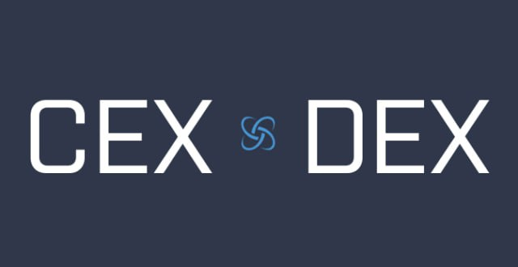
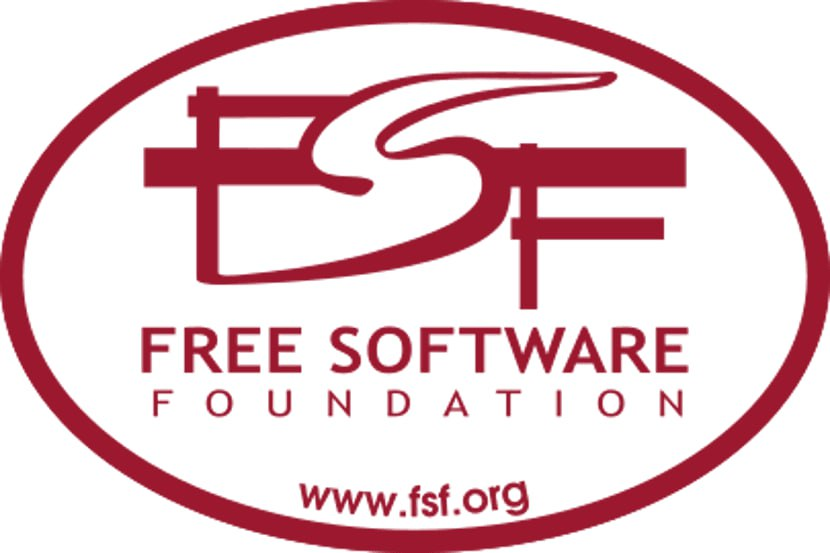
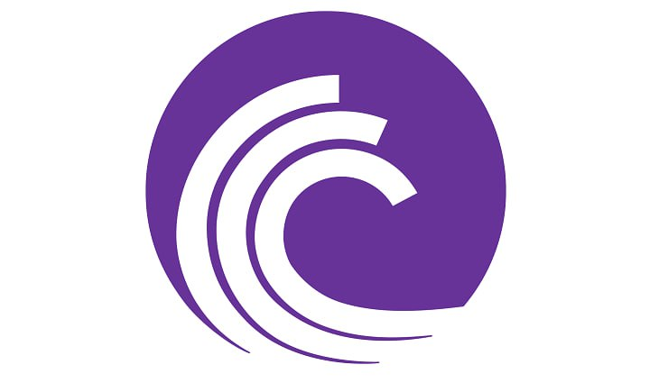
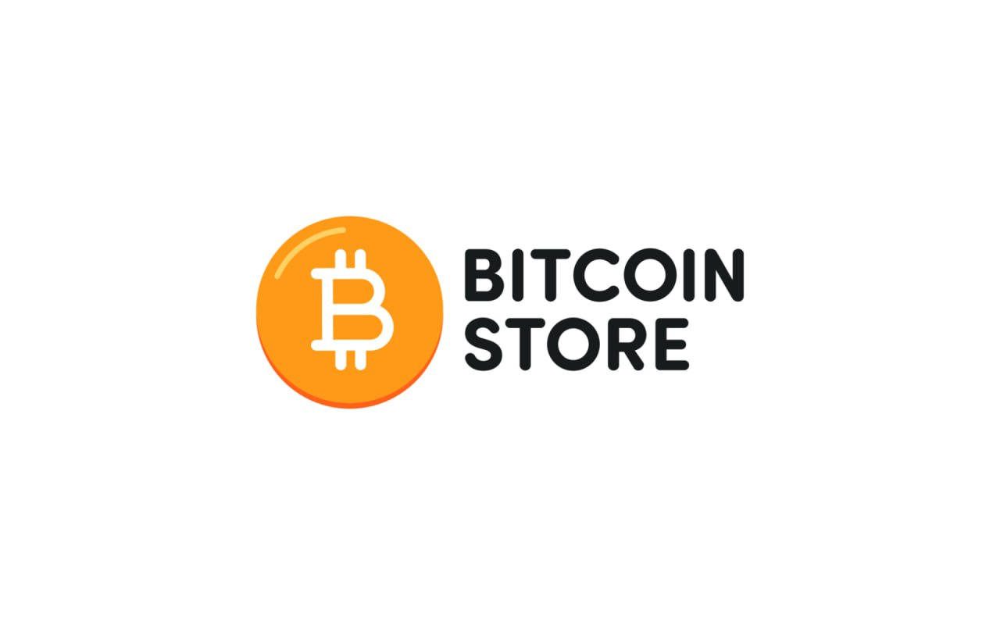
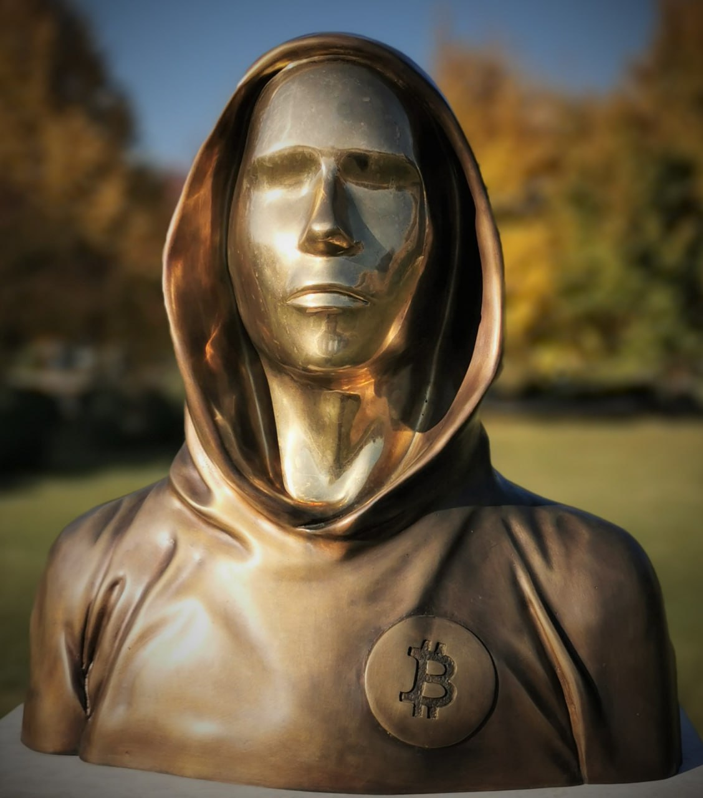
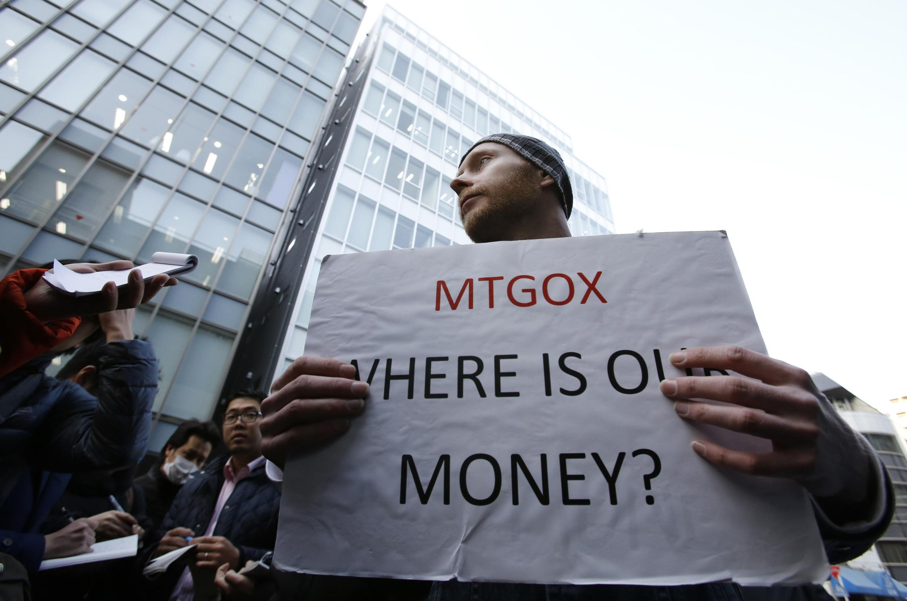
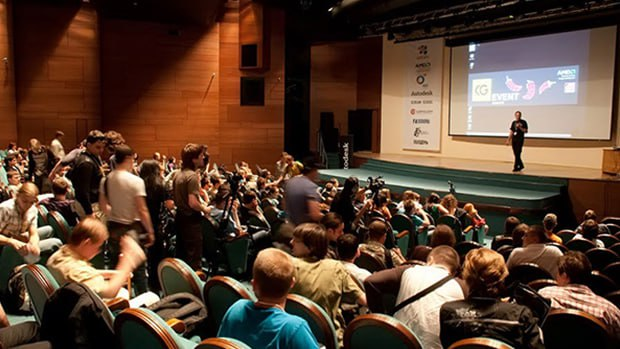
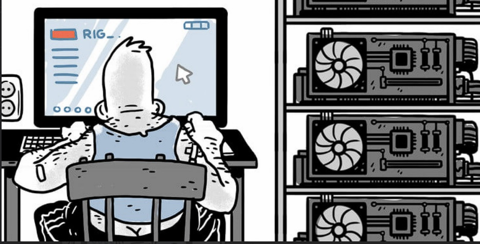
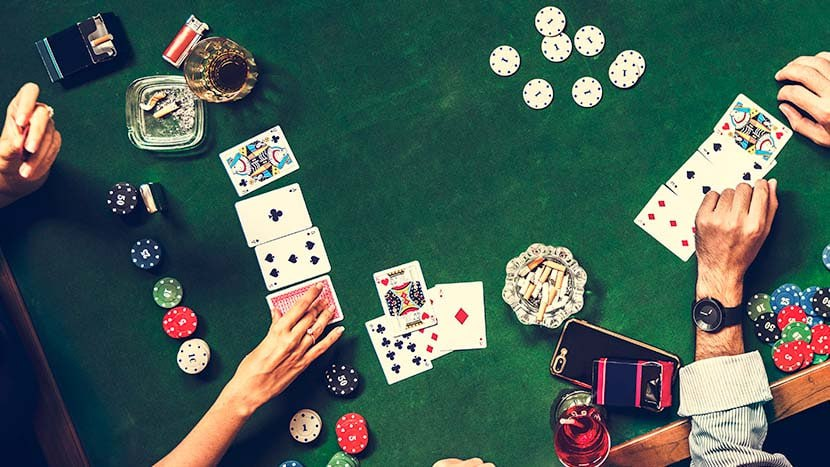

Interesting facts
2011/07/01 - 2011/09/30
1
Only four exchanges were able to trade bitcoin
Mt. Gox: This was the most well-known Bitcoin exchange at the time, and it was launched in July 2010. It was based in Japan and had a significant market share of Bitcoin trading.
TradeHill: This was another popular Bitcoin exchange that was launched in March 2011. It was based in San Francisco and offered trading in Bitcoin and other cryptocurrencies.
Bitcoinmarket.com: This was a smaller Bitcoin exchange that was launched in early 2011. It was based in New York City and offered trading in Bitcoin and Litecoin.
Britcoin: This was a UK-based Bitcoin exchange that was launched in 2011. It was one of the first exchanges to offer trading in Bitcoin and British pounds.
2
Here are some of the merchants that were known to accept Bitcoin as payment in July 2011:
The Free Software Foundation: This nonprofit organization accepted Bitcoin donations to support the development of free software.
Torrific: This was a popular online file-sharing service that allowed users to download files from BitTorrent sites. It accepted Bitcoin as a form of payment for its premium services.
Azienda Vinicola Zanella: This Italian winery accepted Bitcoin payments for its wine products.
Memory Dealers: This online computer memory retailer was one of the first merchants to accept Bitcoin payments. It is still in business today and continues to accept Bitcoin payments.
Bitcoinstore.com: This was an online store that sold electronics and computer hardware exclusively for Bitcoin. It was one of the first online retailers to exclusively accept Bitcoin as payment.
3
Satoshi Nakamoto, the mysterious creator of Bitcoin, had disappeared from the public eye by July 2011 and had not been heard from since.
4
In July, the Mt.Gox exchange was hacked and hackers gained access to the platform's database, using it to conduct fraudulent transactions. It was one of the first major cyberattacks on the bitcoin industry.
5
The total market capitalization of Bitcoin also reached $200 million USD in August 2011, reflecting the growing popularity and adoption of the digital currency.
6
In August 2011, the first Bitcoin-based ransomware attack was reported, in which cybercriminals demanded payment in Bitcoin in exchange for unlocking files on infected computers.
7
The first Bitcoin conference It was called the "Bitcoin Conference" and was held in New York City in September 2011 was a significant event in the early history of Bitcoin. It brought together a community of enthusiasts, developers, and entrepreneurs who shared an interest in the digital currency and its potential future. The conference provided a platform for discussing important topics related to Bitcoin, such as its technical underpinnings, the regulatory landscape, and the possibilities for new applications and use cases. It was also an opportunity for people to network and build relationships with others in the Bitcoin community. Overall, the conference helped to legitimize Bitcoin as a serious topic of discussion and opened the door for further development and growth in the ecosystem.
8
The first Bitcoin mining pool, Slush's Pool, was launched in September 2011. This allowed individual miners to combine their computing power and work together to solve complex math problems and earn Bitcoin rewards.
9
Bitcoin was becoming increasingly popular in online gambling and gaming communities, as it offered a convenient and secure way to make transactions.








